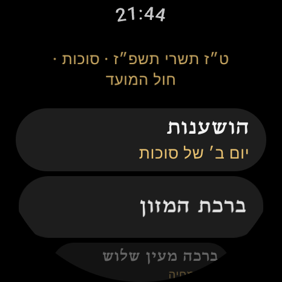
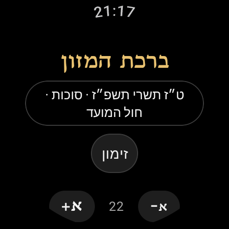
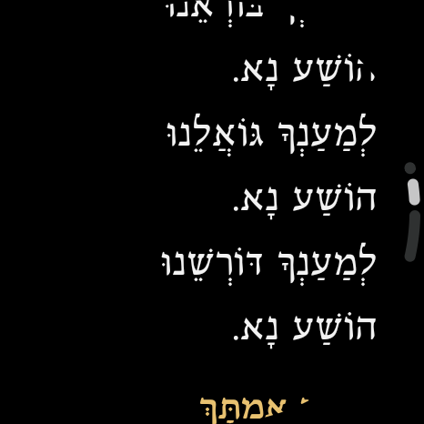
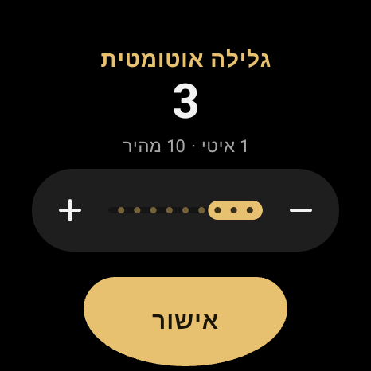

ברכון לשעון
Birkon Watch
ברכת המזון, מעין שלוש ועוד, ישירות על השעון. בשלושה נוסחים, עם התוספות של כל יום לפי התאריך העברי.
בקרוב ב־Google Play (Wear OS)
בקרוב ב־App Store (Apple Watch)




מה יש באפליקציה
- ברכת המזון, ברכה מעין שלוש (על המחיה, על הגפן, על העץ), בורא נפשות, אשר יצר ותפילת הדרך.
- הושענות בימי סוכות, לפי סדר הימים של כל נוסח, כולל הושענא רבה.
- נוסח ספרד, אשכנז ועדות המזרח, בניקוד מלא.
- רצה, יעלה ויבוא, על הניסים ושאר התוספות מופיעים אוטומטית לפי התאריך העברי ושעת השקיעה.
- גלילה בכתר, גלילה אוטומטית במהירות לבחירה, הגדלה בצביטה וארבעה גופנים.
- המסך נשאר דלוק בזמן הקריאה. האפליקציה עובדת בלי טלפון ובלי אינטרנט.
תמיכה
מצאתם טעות בנוסח, יש לכם שאלה או רעיון? כתבו לנו: support@nisai.dev
מדיניות הפרטיות: האפליקציה לא אוספת שום מידע.
Birkon Watch
A Hebrew birkon (Jewish blessings) for Wear OS and Apple Watch. It includes Birkat HaMazon, Al HaMichya, Borei Nefashot, Asher Yatzar, Tefilat HaDerech and Hoshanot, in the Sefard, Ashkenaz and Edot HaMizrach nusachim, with the day's insertions added automatically from the Hebrew date. It works fully offline and collects no data.
Support: support@nisai.dev · Privacy policy